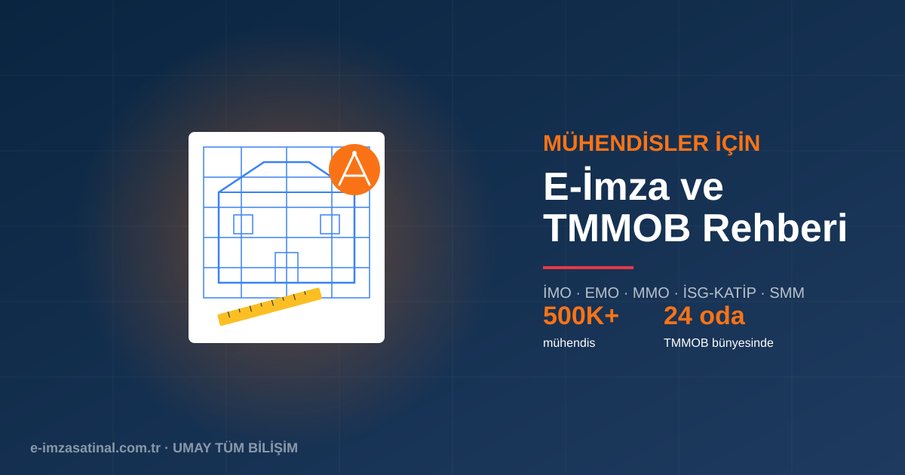

Mühendisler İçin E-İmza Neden Gerekli?
Türkiye'de mühendislik mesleği, TMMOB'a bağlı 24 meslek odası üzerinden yürütülür. İnşaat, makine, elektrik-elektronik, çevre, jeoloji, harita, gıda, kimya ve diğer disiplinlerdeki mühendislerin meslek odası kayıtları, proje onayları, ihale teklifleri, iş güvenliği yükümlülükleri ve devlet başvuruları için e-imzaya ihtiyacı vardır.
Özellikle Serbest Müşavir Mühendis (SMM) belgesi alan bağımsız çalışan mühendisler ve proje sahibi mühendisler için e-imza günlük iş rutininin merkezindedir.
Mühendislerin E-İmza Kullandığı Alanlar
- TMMOB Oda Kayıtları: Üye kayıt, aidat, sicil güncellemeleri, oda etkinlikleri.
- SMM Belgesi Başvuruları: Serbest çalışan mühendislik hizmetleri için belge almak/yenilemek.
- Yapı Denetim İşlemleri: İnşaat mühendisleri için yapı denetim şirketi kayıtları, denetim raporları.
- SGK İSG (İş Sağlığı ve Güvenliği): İşyeri hekimi/İSG uzmanı belge işlemleri, İSG-KATİP.
- EKAP İhale: Kamu ihalelerinde teklif zarfı hazırlama, e-teklif onayı.
- Proje Onayları: Belediye, TSE, Enerji Bakanlığı gibi kurumlara mühendislik projesi teslimi.
- Bilirkişi İşlemleri: Mahkemelere sunulan uzman görüş, keşif raporu.
- TSE Belgelendirme: CE işareti, ISO uyum işlemleri.
- Enerji Kimlik Belgesi (EKB): Enerji verimliliği uzmanları için.
Meslek Odalarına Göre E-İmza Kullanımı
İnşaat Mühendisleri (İMO)
İMO üyeleri için e-imza en yoğun kullanılan sertifikadır. Yapı denetim çalışanları, statik proje sahipleri ve SMM'ler günde onlarca belgeyi e-imza ile onaylar. İnşaat mühendisleri için tipik kullanım:
- Yapı denetim şirketi ruhsat işlemleri
- Belediyeye ruhsat başvurusu
- Deprem yönetmeliği uyum raporları
- SMM belgesi ile bağımsız proje çizim ve onayı
Elektrik-Elektronik Mühendisleri (EMO)
Elektrik projeleri, tesisat onayları, ölçüm raporları, EMO üyeliği ve LPG istasyonu projeleri gibi işlemler e-imza ile yapılır. Yapı denetim ve enerji sektöründe çalışan mühendisler için kritik.
Makine Mühendisleri (MMO)
Mekanik tesisat projeleri, ısı yalıtım hesapları, asansör periyodik kontrolleri, LPG istasyonu, doğalgaz tesisatı projeleri ve MMO üyelik işlemleri e-imza gerektirir.
Diğer Mühendislik Disiplinleri
Kimya, gıda, çevre, harita, jeoloji, orman ve diğer mühendisler kendi meslek odası portalları + ilgili bakanlık sistemleri için e-imza kullanır. Örneğin çevre mühendisleri ÇED raporlarını e-imzalı gönderir, harita mühendisleri TAKBİS ve kadastro işlemlerini yürütür.
SGK İş Sağlığı ve Güvenliği (İSG) Uzmanları
6331 sayılı İSG Kanunu gereği işyerlerine atanan İSG uzmanları (A/B/C sınıfı) ve işyeri hekimleri SGK'nın İSG-KATİP sistemine e-imza ile girer. İSG uzmanlığı belge yenileme, risk değerlendirmesi ve İSG kurul kararları e-imzalı yapılır.
Kamu İhalelerinde Mühendis E-İmzası
Mühendislik hizmet ihalelerinde (mimarlık-mühendislik danışmanlığı, yapı denetim, proje çizim vb.) EKAP üzerinden e-teklif zarfı hazırlanır. Detay için EKAP e-imza rehberimize bakın.
Önerilen Paket: Mühendisler İçin
Senaryo 1: Kamu/Özel Sektör Çalışanı Mühendis
- 1 × Bireysel E-İmza (3 yıllık) — oda işlemleri, iş yeri sistemi girişi için
- Yıllık maliyet: ~1.250 TL
Senaryo 2: SMM (Serbest Müşavir Mühendis)
- 1 × Bireysel E-İmza (3 yıllık) — proje imzalama, oda işlemleri
- 1 × KEP hesabı — resmi yazışmalar (belediyeler, kamu kurumları)
- Mali Mühür (mükellef olarak) — e-Fatura kesimi için
- Yıllık maliyet: ~2.500 TL
Senaryo 3: Yapı Denetim Şirketi Sahibi
- Her denetçi/mühendis için ayrı e-imza
- Şirket için mali mühür + KEP
- Yıllık maliyet: 3.000-6.000 TL (çalışan sayısına göre)
Mühendislere Özel Sık Sorulan Sorular
TMMOB üyeliğim iptal edildi, e-imza kullanabilir miyim? Evet. E-imza TMMOB ile ilgili değildir; kişiye aittir ve tüm devlet sistemlerinde kullanılabilir.
Farklı odalara üyeyim (İMO + MMO), tek e-imza yeter mi? Evet, tek bir bireysel e-imza tüm meslek odası işlemlerinde geçerlidir.
Yurtdışında müşavirlik yapıyorum, Türkiye e-imzası oradan çalışır mı? Evet. Tarayıcı + AKİS + USB token ile herhangi bir ülkeden Türk devlet sistemlerine giriş yapılabilir.
Yapı denetim şirketinde çalışıyorum, şirket adına mı imza atmalıyım? Denetim yapan mühendis kendi adına imza atar; şirket adı da belgede yer alır. Firma e-imzası ayrı — daha çok yönetici yetkilendirmesi içindir.